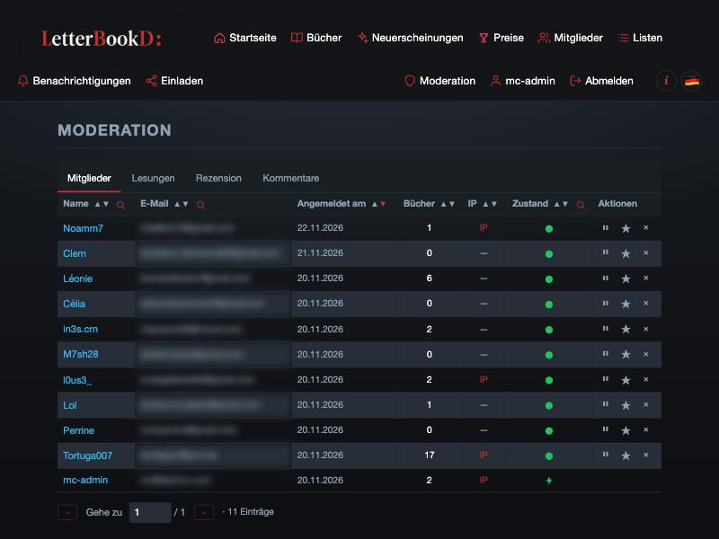

Moderation — Mitglieder Nur Admin

Ablauf
Vier Reiter oben: Mitglieder (hier), Lesevorgänge, Rezensionen, Kommentare. Die Mitgliedertabelle listet für jedes Konto: Name (Pseudonym, klickbar, öffnet das Profil), E-Mail (in der Anwendung im Klartext), Registriert am (Datum), Bücher (Anzahl der Lektüren), IP (rotes Badge „IP“, wenn eine verdächtige IP-Adresse festgestellt wurde, sonst ein Strich) und Status (grüner Punkt = aktiv, grüner Blitz = Admin).
Die Spalte Aktionen bietet pro Zeile drei Symbol-Schaltflächen: Pause (sperren), Stern (Admin-Rechte vergeben bzw. entziehen) und Kreuz (löschen). Jede Spalte ist sortierbar (▲▼) und über das Lupen-Symbol filterbar, das das Filter-Modal öffnet.
Aktionsketten
Jede Zeile beschreibt einen Auslöser in der Oberfläche, das sich öffnende Modal/Formular und den erzielten Effekt.
| Auslöser | Modal / Felder | Effekt |
|---|---|---|
| Reiter Mitglieder / Lesevorgänge / Rezensionen / Kommentare | Navigation über ?tab=… | Wechselt die Ansicht (normale Navigation). |
| Pfeile ▲▼ in einer Spaltenüberschrift | — | Sortiert die Spalte aufsteigend (▲) oder absteigend (▼). Die Sortierung wird in der URL gespeichert. |
| Lupen-Symbol in einer Spaltenüberschrift (öffnet das Modal Filter) | Modal mit Textfeld „Filtern — <Spalte>“ und Schaltflächen „Anwenden“ / „Zurücksetzen“ / „Abbrechen“. | Filtert die Tabelle nach der gewählten Spalte. „Zurücksetzen“ entfernt den Filter. Mehrere Spalten können kombiniert gefiltert werden. |
| Pause-Schaltfläche (||) in einer Mitgliederzeile | Bestätigendes POST-Formular. | Sperrt das Konto: Das Mitglied kann sich nicht mehr anmelden und nichts mehr posten. Es kann später wieder aktiviert werden (gleiche Schaltfläche). |
| Stern-Schaltfläche (☆/★) in einer Mitgliederzeile | POST-Formular. | Vergibt oder entzieht Admin-Rechte (is_staff + is_superuser). Der grüne Blitz in der Spalte Status ändert sich sofort. Ein Admin, der seine eigenen Rechte entzieht, verliert den Zugang zur Moderation. |
| Kreuz-Schaltfläche (×) in einer Mitgliederzeile | Bestätigendes POST-Formular. | Löscht das Konto und alle zugehörigen Daten endgültig (Lektüren, Rezensionen, Kommentare, Listen, Einladungen). Nicht rückgängig zu machen. |
| Tabellenfuß: „Gehe zu [n] / X“ und Pfeile | Einfache Seitennavigation. | Wechsel zwischen den Ergebnisseiten. |